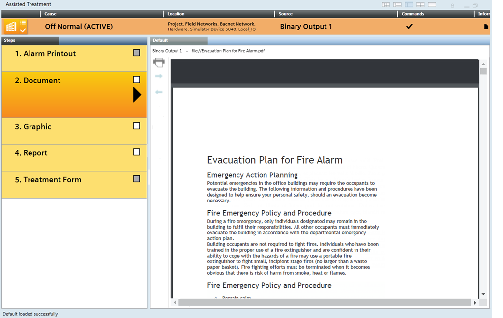

Handling Events with Assisted Treatment
Assisted treatment provides a guided step-by-step procedure for handling an event.

The  icon on an event button indicates that an assisted treatment procedure is available for that event.
icon on an event button indicates that an assisted treatment procedure is available for that event.
Start Assisted Treatment
- An event button with the icon is available in Event List, or in the Event Detail bar.
- Do one of the following:
- If the event is not yet selected, depending on the Client Profile, single-click or double-click the event button.
- If the event is already selected, in the Information column, click Opens related treatment .
- The Assisted Treatment window opens. It displays the descriptor of the event that you are handling along the top, and below it a sequence of steps you must follow to handle that event. In Event List, the event button for that event is replaced by a blank placeholder to indicate it is under assisted treatment.
- If assisted or investigative treatment of any other event was in progress, it is interrupted. You can only have one event in assisted or investigative treatment at any given time.
Send Event Handling Commands
From the event descriptor, use the icons in the Commands column to send any commands as they become available. The commands you must send will vary depending on configuration. A typical sequence may include:
- Click
 to acknowledge the event.
to acknowledge the event. - This action also causes any audible alarm sound of the field panel to be silenced.
- After acknowledging the event, click
 to silence or click
to silence or click  to unsilence the detection line.
to unsilence the detection line.
This means that if a field panel is connected to a detection line with horns, you can silence any horns audible sound in the site or turn it back. - Click
 to reset the event.
to reset the event. - Click
 to close the event.
to close the event.
Check the Event Status
When no further commands are available, use the Event Status and Suggested Action columns to determine the next action you need to take. A typical sequence may include:
- Event Status =
Waiting for condition: - Suggested Action =
Complete operating procedure. No further commands are available because you must first complete at least the mandatory steps of the operating procedure. See Complete the Operating Procedure, below. - Suggested Action =
Wait for condition. The event cannot be reset until the event source is back to normal. You must correct the situation that caused the event or wait for the Source Status to return to Quiet, before you can send the remaining commands. - Event Status =
Closed. You finished handling this event, and the event is ready to be cleared from the list.
a. Click the event button again to deselect the event. - The Assisted Treatment window closes, and the event is removed from Event List.
Complete the Operating Procedure
The Steps pane on the left lists the tasks to perform to handle the event. Mandatory steps are marked with an exclamation mark . The step currently being executed is marked with a triangle .

- Click the step you want to execute.
NOTE: When you move your mouse over a step, if the pointer turns into a hand it means you can execute that step. If the step is not available, this is usually because a preceding mandatory step needs to be completed first. In this case, try another step. - The step expands and is marked to indicate that it is being executed. Information and tools for performing that step display in the Default tab. For example, if you selected a document step, the document that you must read will display.
- Perform the tasks required for the selected step. For detailed instructions, see:
- When you complete the tasks required by the step, the check box alongside the step turns white
 , indicating that you can check it off. If the check box is gray
, indicating that you can check it off. If the check box is gray  , it means you cannot check off the step because you have not performed all the actions required to complete the step.
, it means you cannot check off the step because you have not performed all the actions required to complete the step. - Check off the step by clicking the white check box . This marks it as complete.
- A checkmark
 displays in place of the check box to indicate the step was completed. An execution status icon underneath it indicates its outcome:
displays in place of the check box to indicate the step was completed. An execution status icon underneath it indicates its outcome: success /
/ failure / or
/ or in progress .
.
NOTE: If you see a step that has been automatically checked off, this means it was automatically executed by the system (either immediately when the event occurred, when you initiated event handling, or depending on configuration). - Repeat the preceding actions until you have completed at least all the mandatory procedure steps. Also complete any non-mandatory steps you want to perform.
- Some steps are repeatable, and in that case, you can select and repeat them, even if they are already checked off. For example, you might want to consult the document in the document step again.
- Once you have completed the operating procedure, send any further commands that become available to finish handling the event. See Send Event Handling Commands, above.
Open the Contextual Pane
You can use the Contextual pane to access properties and commands of an event source without leaving the treatment window.
- To open the Contextual pane, do one of the following:
- In the window header, click the three-pane, four-pane, or five-pane layout icon
 ,
,  ,
,  .
. - Click the splitter button
 at the bottom of the window.
at the bottom of the window. - The Operation, Extended Operation, Detailed Log and Related Items tabs display at the bottom of the window. Information, properties, and commands of the selected event display. From here you can:
- Inspect the properties of the object that issued the event.
- View and execute any commands/actions available for that object.
- View a detailed log of the event currently being handled.
- Access related items in the Secondary pane. - When you are finished, to hide the Contextual pane, do one of the following:
- Click the splitter button again.
- In the window header, click the single-pane or the two-pane layout icon

 .
.
Switch Between Assisted Treatment and Event List
You can switch back to check Event List, and handle other events from there, without interrupting the assisted treatment currently in progress.
- The Assisted Treatment window displays in the foreground.
- In the Summary bar, do one of the following:
- Click Open Event List
 .
. - Select Menu > Active Tasks > Event List.
- Event List displays. The event that you are currently handling in assisted treatment is indicated by a blank placeholder in place of the event button. The Assisted Treatment window is moved to the background but not closed.
- (Optional) If required, you can select other events in Event List, and send event-handling commands from there. You cannot select the event that is currently in assisted treatment.
- To return to assisted treatment, in the Summary bar, do one of the following:
- Click Close Event List
 .
. - Select Menu > Active Tasks > Assisted Treatment.
- The Assisted Treatment window returns to the foreground and you can resume the procedure where you left off.
Interrupt Assisted Treatment of an Event
You can interrupt assisted treatment of an event at any time, and later resume the operating procedure from where you left off.
- To interrupt assisted treatment of an event, do one of the following:
- In the Assisted Treatment window, click the event button in the event descriptor along the top.
- In Event List or the Event Detail bar, click the blank placeholder that displays in the position of the event button.
- The Assisted Treatment window closes. In Event List, the event is deselected, and the event button displays again instead of the blank placeholder. The Event Status remains as it was when you interrupted handling the event. When you start assisted treatment of this event again, the procedure will resume from where you left off.

You can only have one event in assisted or investigative treatment at any given time. If you want to start assisted or investigative treatment of another event, this will interrupt any assisted/investigative treatment currently in progress. However, you can later resume the interrupted treatment from where you left off.
Finish Assisted Treatment of an Event
When you have sent all the required event- handling commands and completed at least the mandatory steps of the operating procedure, the Event Status changes to Closed, and the Suggested Action is Suspend the event.
- Do one of the following:
- In the Assisted Treatment window, click the event button in the event descriptor along the top.
- In Event List or the Event Detail bar, click the blank placeholder that displays in the position of the event button.
- The Assisted Treatment window closes, and the event is cleared from Event List.